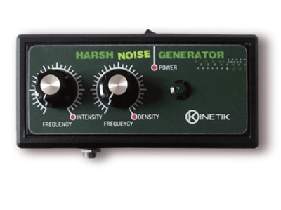
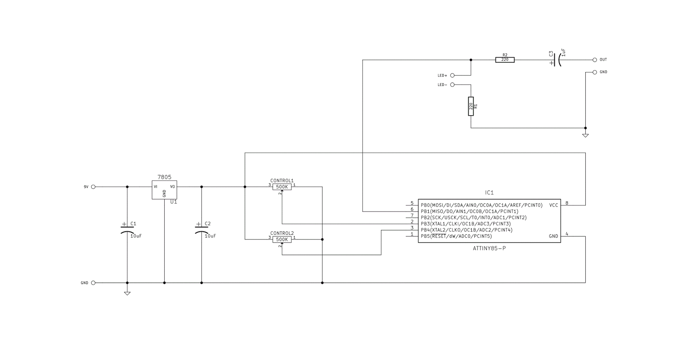
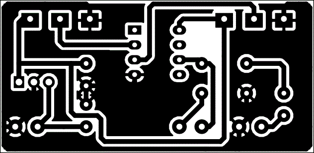
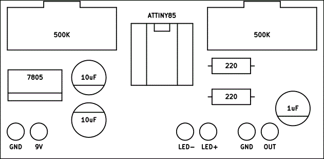

We produced the Harsh Noise Generator from 2012 to 2014. Since we still receive requests for this little generator, here you find the documentation to build it by yourself. The design is made publicly available so that anyone can study, modify, distribute, make, and sell the hardware based on that design.


HNG is a minimal noise generator, ideal sound source for your effect chain. It has two operating modes. In the first operation mode the frequency of two oscillators varies randomly around the value set with the knobs named FREQUENCY.
Turning the unit on with the knobs rotated fully clockwise you access the second operation mode. Noise and silence are alternated with intervals that vary randomly around the value set with the DENSITY knob.
The INTENSITY knob adjust the noise energy.

The circuit is powered with 9V DC. The LM7805, with capacitors C1 and C2, generate a stable 5V for the rest of the circuit.
The potentiometers are used as a voltage divider and connected to the pins 2 and 3 of the ATtiny chip. The potentiometer value is not critical, you can use any value available.
The main IC is a ATtiny45 or ATtiny85, a high-performance, low-power Atmel 8-bit microcontroller.
To program the ATtiny85 chip use an Arduino board programmed as ISP. You'll need a breadboard, some piece of wire and an Arduino board. Here you can find the instructions to program the ATtiny.
Output is from pin 6 and goes to your output jack through a 220 Ohm resistor and a 1uF capacitor. The output pin is also connected to a LED that blinks according to the sound you hear.


Here's the images to be printed if you use press and peel method.
Print it at 90 dpi to obtain the right dimensions.
Here you can download all the documentation, the gerber files and the software needed to program the ATtiny85.
Enjoy the build!